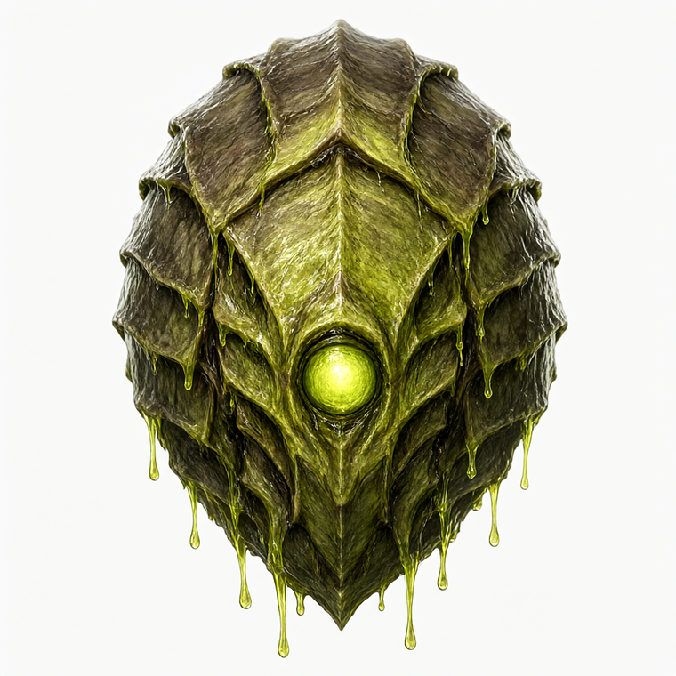
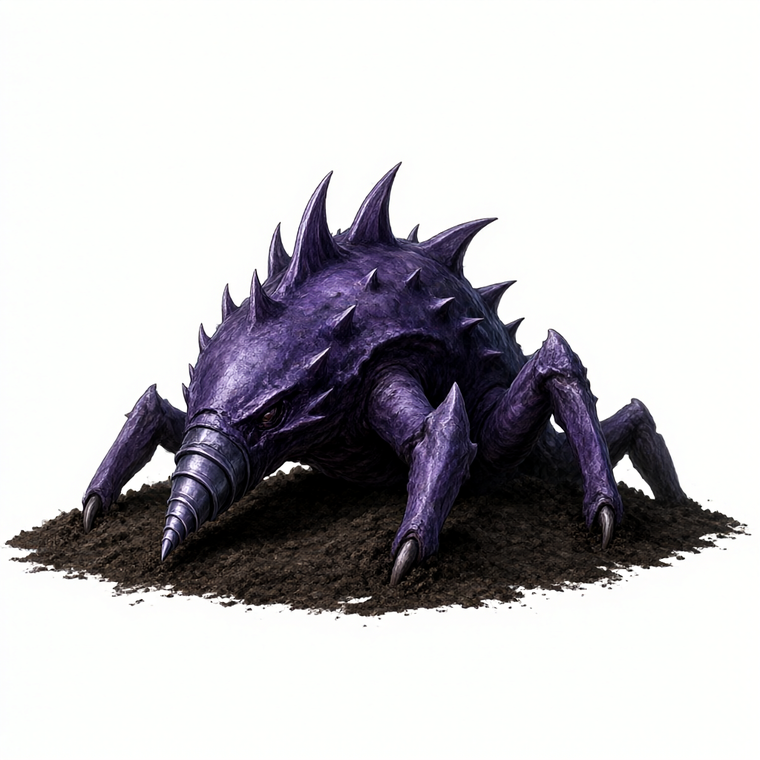
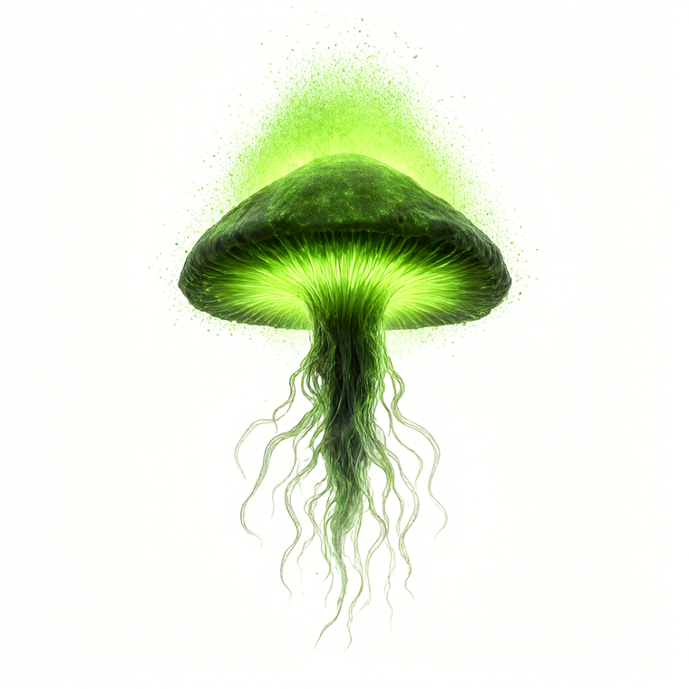
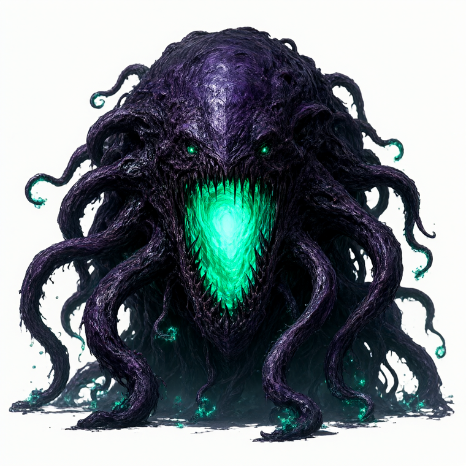
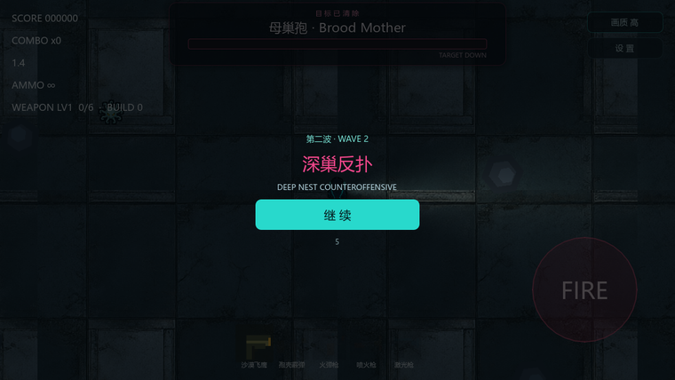
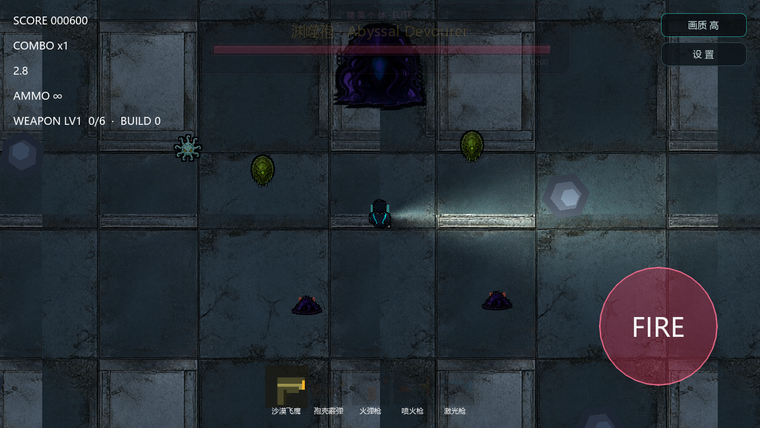

几丁质甲壳覆盖的孢体，背部装甲板可抵挡首轮火力；口器持续滴落酸液，站桩喷吐扇形毒液并在落点留下腐蚀毒云，逼迫玩家走位。
| 行为 | walkvenom |
| 生命 / 移速 | 95 / 46 |
| 攻击 / 听觉 / 警觉 | 10 / 300 / 420 |
| 体型倍率 | 1.15（厚甲） |
| 毒云 | 半径52 · 3.0s · 10/s |
| 染色 / 血色 | #ccd64d / #948f1f |
| 刷出权重 | tier0 0.10 · +0.16/档 |
半埋潜伏，仅露脊刺；玩家进入警觉半径后破土高速突袭，低血高伤，是「冲脸破解远程」打法的反制。常与腐蚀孢形成夹击。
| 行为 | ambush |
| 生命 / 移速 | 34 / 130 |
| 攻击 / 听觉 / 警觉 | 12 / 380 / 360 |
| 体型倍率 | 0.95（瘦长） |
| 染色 / 血色 | #7642b8 / #4d2a78 |
| 刷出权重 | tier0 0.12 · +0.10/档 |
悬浮菌伞状孢体，缓慢漂移并持续散播发光孢子；死亡时炸开一片持久毒雾，封锁走廊与掩体后方，制造「不速清场」的压力。
| 行为 | miasma |
| 生命 / 移速 | 70 / 50 |
| 攻击 / 听觉 / 警觉 | 8 / 260 / 320 |
| 体型倍率 | 1.10（漂浮） |
| 死亡毒雾 | 半径90 · 4.5s · 11/s |
| 染色 / 血色 | #5cf08a / #48a866 |
| 刷出权重 | tier0 0.09 · +0.14/档 |
渊巢的终极备份体：深渊巨口内腔生物荧光青绿，触须缠裹。冲锋更频、弹幕更密、召唤更众——召唤的正是蚀甲孢。母巢孢之后最凶险的单挑。
| 行为 | boss |
| 生命 / 移速 | 5200 / 54 |
| 攻击 / 听觉 / 警觉 | 24 / 1000 / 1000 |
| 体型倍率 | 3.2（巨型） |
| 冲锋 | 间隔2.6s · ×5.6 |
| 技能 | 弹幕18 · 喷息9 · 召唤5 |
| 召唤体 | 蚀甲孢 Corroder |
| 染色 / 血色 | #574d94 / #801a6b |
| 得分 | 900 |
由 agnes-image 文生图产出，白底便于后续去背；四张分别对应上面三怪一王，配色与设定稿一致。




从设计到代码/资源的一一对应：
数据 assets/data/enemy_corroder.tres · enemy_burrower.tres · enemy_bloom.tres · enemy_abyss.tres
贴图 assets/characters/enemy_corroder.png · enemy_burrower.png · enemy_bloom.png · enemy_abyss.png（由 agnes 概念图经 make_sprites.gd 去白底导出）
波次 scripts/enemy/WaveMode.gd — 第一波 BOSS 击溃 → EventBus.boss_defeated → 弹出过渡卡 → 第二波刷怪 + 召唤渊噬孢
UI scripts/ui/WaveCard.gd + scenes/ui/WaveCard.tscn — 「进入下一波 / WAVE 2」提示卡
接入 scenes/world/Arena.tscn — 关闭 Spawner 计时精英（elite_times=[]），挂入 WaveCard 与 WaveMode
概念图经 make_sprites.gd 泛洪去白底 → 归一化 → 透明画布导出为游戏精灵；下方为 1152×648 实机截图。


验收 tests/probe_wave.gd 端到端波次探针 18 / 18 PASS（第一波 BOSS → 击溃 → 暂停弹卡 → 继续 → 第二波注入 3 新怪 → 召唤渊噬孢 → 击溃 → 区域肃清）。
截图 tools/shot_wave2.gd 带窗口实机取证（headless 取不到 framebuffer）。